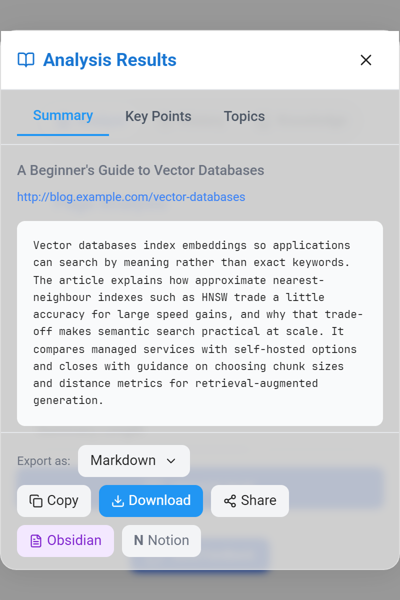
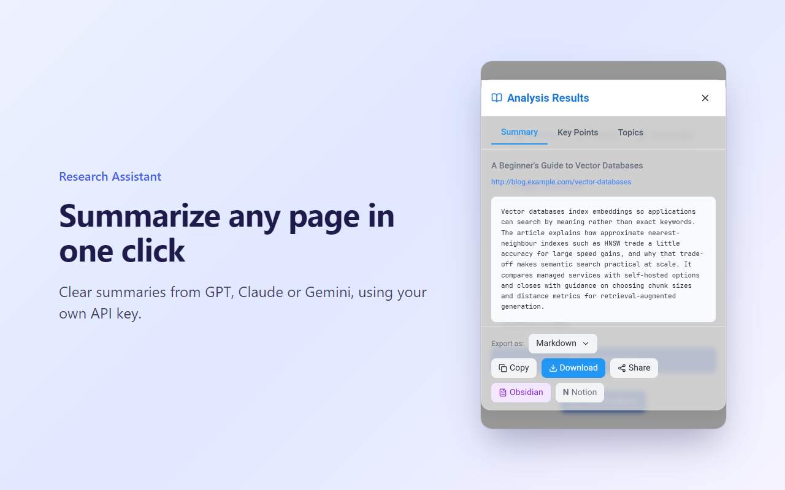
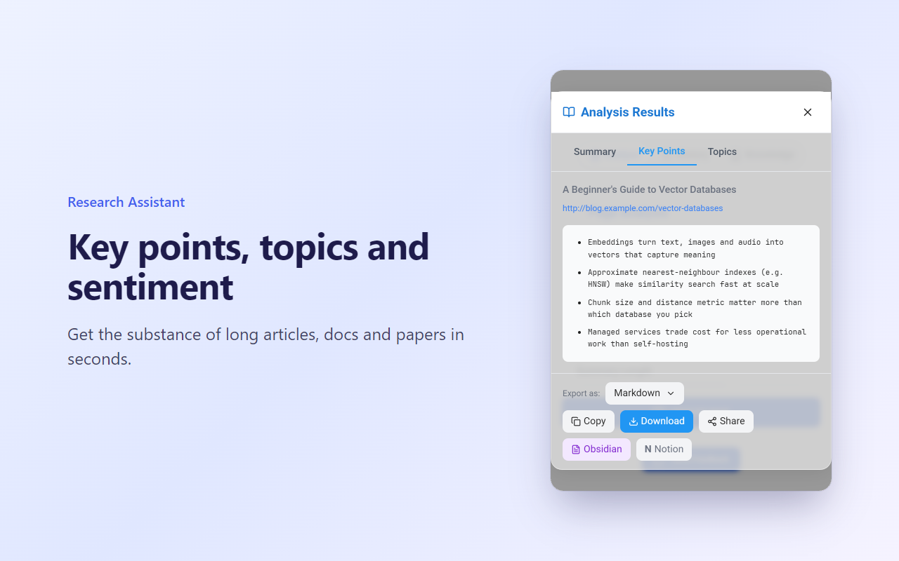
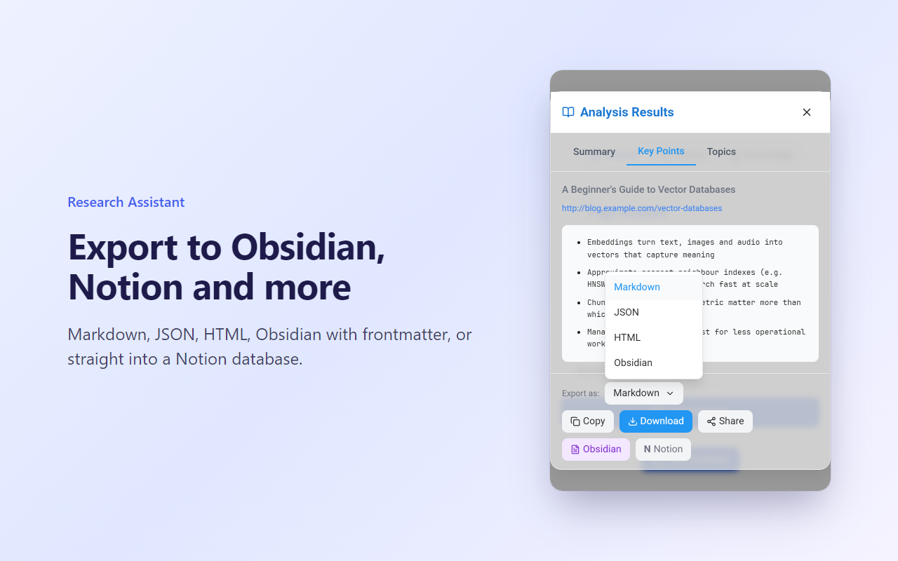
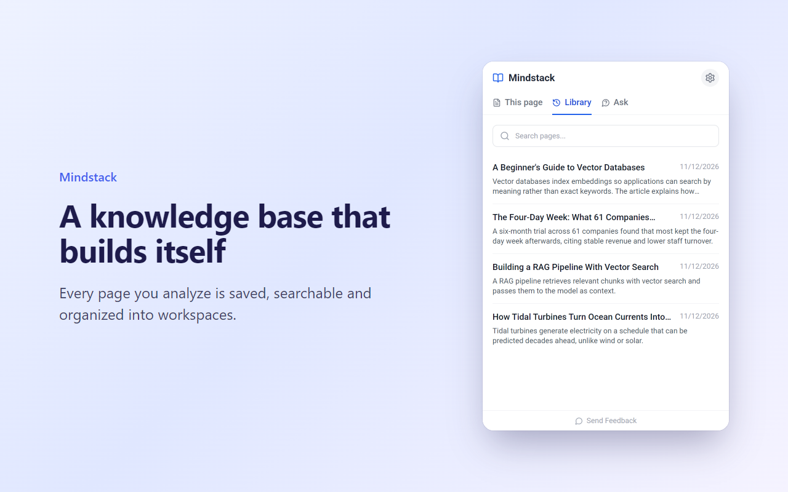

A free browser extension that turns long articles, docs and papers into summaries and key points, using GPT, Claude or Gemini with your own API key. No account. No servers. Your research stays in your browser.

Summary, key points, topics and sentiment for the page you're reading.
OpenAI, Anthropic Claude or Google Gemini. Pick any model your key can use; the list updates itself.
Every analysis is saved and searchable, organized into workspaces, with Q&A across everything you've read.
Send notes straight to your vault with YAML frontmatter, tags and wikilinks.
Save each analysis as a page in the Notion database you choose.
Copy or download in the format your workflow needs.




There is no Research Assistant backend. Page text goes directly from your browser to the AI provider you choose.
No analytics, no accounts, no data collection.
History, knowledge base and settings live in your browser. Read the privacy policy.
Yes. The extension is free, with no account, subscription or paid tier. You use your own API key from OpenAI, Anthropic or Google, and pay that provider directly for what you use. With smaller models that is usually well under a cent per page.
Yes. Research Assistant sends any analysis to your Obsidian vault as a note with YAML frontmatter, tags and wikilinks, and can also download Markdown files.
Yes. Connect a Notion integration token in Settings, pick a database, and each analysis is saved as a page in that database.
No. There are no Research Assistant servers. Page text goes straight from your browser to the AI provider you choose, and your history and knowledge base are stored locally in your browser.
OpenAI (GPT models), Anthropic (Claude models) and Google Gemini. The model list is fetched live from your provider, so new models appear automatically.
No. Install the extension, paste an API key in Settings and click Analyze on any page.
It is available for Chrome and Firefox, and works in Microsoft Edge and other Chromium browsers via the Chrome Web Store. A listing on Microsoft Edge Add-ons is coming.